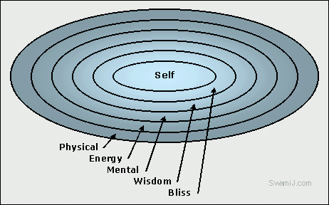

Five Sheaths or Koshas of
Yoga
by Swami Jnaneshvara Bharati
SwamiJ.com
We humans are like a lamp that has five lampshades over our light. Each of the lampshades is a different color and density. As the light shines through the lampshades, it is progressively changed in color and nature. It is a bitter-sweet coloring. On the one hand, the shades provide the individualized beauty of each lamp. Yet, the lampshades also obscure the pure light.

The Yoga path of Self-realization is one of progressively moving inward, through each of those lampshades, so as to experience the purity at the eternal center of consciousness, while at the same time allowing that purity to animate through our individuality. These five levels are called koshas, which literally means sheaths.
Physical -
Annamaya kosha
Energy - Pranamaya kosha
Mental - Manamaya kosha
Wisdom - Vijnanamaya kosha
Bliss - Anandamaya kosha
Self - Atman
Kosha means sheath, like the lampshades covering the light, or like the series of wooden dolls pictured below. Maya means appearance, as if something appears to be one way, but is really another. Advaita Vedanta suggests that you imagine a dark night in which you think you see a man, only to find that it was an old fence post that was hard to see at first; that is maya.
Here, it means that each of the sheaths or koshas is only an appearance. In truth, all of the levels, layers, koshas, or sheaths of our reality is onlyappearance, or maya (while also very real in the sense of dealing with the external world), and that underneath all of those appearances, we are pure, divine, eternal consciousness, or whatever name you prefer to call it. This is one of the fundamental principles of Advaita Vedanta meditation.
While some view maya as meaning that nothing is real, and turn this into a cold-hearted intellectual practice, others view the illusion of maya as being shakti, the creative force of the universe. In this way, the maya of the koshas is experienced both as unreal and, at the same time, as the beautiful manifestations of the universal oneness.
Physical - Annamaya kosha
Anna means food. All of the physical aspects of life come and go, and are consumed by another aspect of external reality. Thus, the outermost of the koshas is called the sheath of food, or Annamaya kosha.
In Vedanta practice, we train this aspect of ourselves, take care of it, nurture it, so that we can both enjoy our external lives and go inward without it being an obstacle during meditation time. In meditation, we become aware of Annamaya kosha, explore it, and then go inward, to and through the other koshas.
Energy - Pranamaya kosha
The next of the koshas is Pranamaya kosha. Prana means energy. It is the vital force that produces the subtle vibrations related to breath, and which are the driving force behind the physical aspect of the senses and the operation of the physical body. It allows the invisible indweller, our True Self to be able to animate in the external world. At the same time, however, it allows the eternally still, silent center of consciousness to be mistakenly identified as the moving, visible physical body.
For both a healthy life and the practice of meditation, Vedanta says that it is very useful, or essential that this level of our being be trained, regulated, and directed, so that it flows smoothly. In meditation, we become aware of Pranamaya kosha, explore it, and then go inward, to and through the other koshas.
Mental - Manamaya kosha
The next of the koshas is Manamaya kosha. Mana means mind. It is the level of processing thoughts and emotions. It is in direct control of the operation, through the prana, of the physical body and senses. It is like a supervisor in a factory, in that it gives instructions, but is not supposed to be the manager of the factory of life. Because of this, it naturally has doubts, and created illusions. When it receives clear instructions from the deeper level, it functions quite well. However, when it is clouded over by its illusions, the deeper wisdom is clouded over.
After taking care of the physical body and training the energy flow of prana, the most important part to be trained in positive ways is this level of mind. In meditation, we become aware of Manamaya kosha, explore it, and then go inward, to and through the remaining koshas.
Wisdom - Vijnanamaya kosha
The next of the koshas is Vijnanamaya kosha. Vijnana means knowing. It is the sheath of wisdom that is underneath the processing, thinking aspect of mind. It knows, decides, judges, and discriminates between this and that, between useful and not useful. It is also the level of ego consciousness, meaning the powerful wave of I-am-ness. This I-am-ness itself is a positive influence, but when it gets co-mingled with the memories, and is clouded over by the manas, it loses its positive strength.
A major part of sadhana (spiritual practice) is gaining ever increasing access to this level of our being. It is the level that has the higher wisdom to seek Truth, to go within, in search of the eternal center of consciousness.
Bliss - Anandamaya kosha
Anandamaya kosha is the most interior of the koshas, the first of the koshas surrounding the Atman, the eternal center of consciousness. Ananda means bliss. However, it is not bliss as a mere emotion experienced at the level of the sheath of mind. Ananda is a whole different order of reality from that of the mind. It is peace, joy, and love that is underneath, beyond the mind, independent of any reason or stimulus to cause a happy mental reaction. It is simply being, resting in bliss called ananda.
Yet, even this bliss, however wonderful it is, is still a covering, a sheath, a lampshade covering the pure light of consciousness. It is the subtle most of the five koshas. In the silence of deep meditation, this too is let go of, so as to experience the center.
Atman - Self
Atman is the Self, the eternal center of consciousness, which was never born and never dies. In the metaphor of the lamp and the lampshades, Atman is the light itself, though to even describe it as that is incomplete and incorrect. The deepest light shines through the koshas, and takes on their colorings.
Atman, the Self, has been best described as indescribable. The realization of that, in direct experience, is the goal of Yoga meditation, Advaita Vedanta, and Tantra practices taught in the Himalayan tradition.
Source: http://swamij.com/koshas.htm